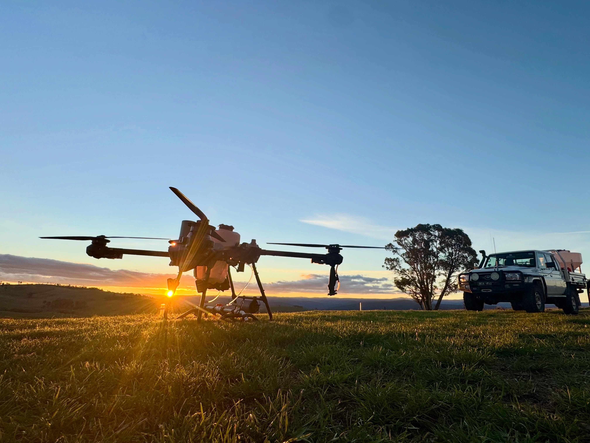

Service 01
Precision aerial application
Safe, accurate application across agricultural, environmental and carbon projects throughout Australia.
What we do
Built for real operating conditions
Four Peaks Pastoral uses specialised drone systems to apply herbicides, fertilisers, seed and other agricultural products with accurate placement and clear operational records.
The fleet can work across broadacre paddocks, rolling grazing country, steep hillsides, forestry, revegetation sites and remote areas where conventional machinery cannot operate safely or economically.

01 / 07
Application capability
- Pre-plant site preparation
- Precision herbicide application
- Grass overspray programs
- Woody weed and blackberry control
- Broadleaf weed management
- Spot spraying and targeted weed control
- Revegetation and environmental planting support
- Precision fertiliser application
- Seed spreading and aerial seeding
- Remote and difficult terrain operations
- Plantation establishment support
- Post-treatment monitoring and verification